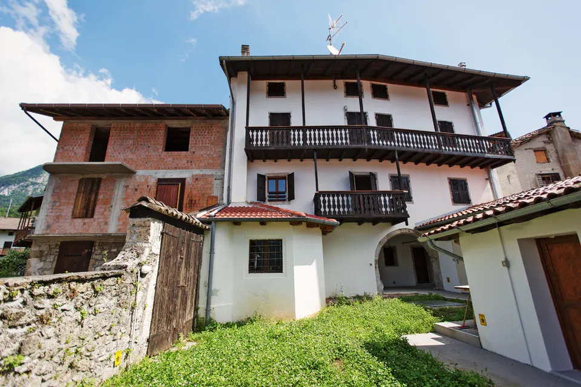

Bed & breakfast · Lungis
La Farie
Rooms with private bathrooms and a garden
Explore the rooms
Bed & breakfast · Lungis
La Farie
Rooms with private bathrooms and a garden
Explore the rooms
Albergo diffuso in Socchieve · CarniaLive Carnia like a local.
Holiday houses and apartments in the villages of Socchieve, plus La Farie, a B&B in Lungis. Authentic stays in Carnia, near the Friulian Dolomites.
Lungis · Socchieve
La Farie, bed & breakfast in Lungis.
In Lungis, near Socchieve, La Farie is a bed and breakfast in a restored traditional Carnic house. Rooms with private bathrooms, a garden and breakfast available: a different way to stay from the Col Gentile holiday homes, run by the same Albergo Diffuso Socchieve.
- Breakfast available
- Garden
- Free private parking
Not a hotel with many rooms. A whole village that opens its homes to you.
An albergo diffuso – literally a “scattered hotel” – offers hotel services spread across a lived-in village. In Socchieve you sleep in a real village house, have your coffee with the people who live here and walk straight out onto the trails of Carnia. Tourist and local, on the same trip.


Choose your village home.
From a studio for two to a villa for groups of up to 21. Filter by village or number of beds.
Up to 18 guests360°Casa Vanda
The whole 18th-century villa in Viaso, in stone with wooden balconies: five apartments for large families and groups of up to 18.

Up to 21 guests360°Casa Ernesto da Rosuline
 Up to 9 guests
Up to 9 guestsCasa Pradin
 Up to 4 guests
Up to 4 guestsCasa Ai Pascoli
 Up to 6 guests
Up to 6 guestsCasa Vanda Iris
 Up to 4 guests
Up to 4 guestsCasa Vanda Bucaneve
 Up to 4 guests
Up to 4 guestsCasa Vanda Papavero
 Up to 5 guests
Up to 5 guestsCasa Vanda Genziana
 Up to 4 guests
Up to 4 guestsCasa Vanda Ortensia
 Up to 5 guests
Up to 5 guestsErnesto da Rosuline 1
 Up to 5 guests
Up to 5 guestsErnesto da Rosuline 2
 Up to 5 guests
Up to 5 guestsErnesto da Rosuline 3
 Up to 2 guests
Up to 2 guestsErnesto da Rosuline Terra
 Up to 5 guests
Up to 5 guestsCasa Rovedo
 Up to 8 guests360°
Up to 8 guests360°Casa dal Miedi
Book directly on the official Col Gentile system, with no middlemen.
Eight villages, one valley.
 527 m a.s.l.Viaso
527 m a.s.l.Viaso 554 m a.s.l.Lungis
554 m a.s.l.Lungis 769 m a.s.l.Feltrone
769 m a.s.l.Feltrone 449 m a.s.l.Nonta
449 m a.s.l.Nonta 550 m a.s.l.Priuso
550 m a.s.l.Priuso 412 m a.s.l.Socchieve
412 m a.s.l.SocchieveTake your time.
Walks and hikes, cycling, Romanesque art and the great classics of Carnia. You set off straight from our houses.
01Trekking
Four loops starting from the villages, plus the Col Gentile crossing on CAI trail 235.
See the routes 02Cycling
The Mediis MTB trail and the Passo Rest loop, with the Zoncolan 24 km away.
Find out more 03
03Art and culture
Find out more 04Visit Carnia
Sauris and its ham, the Lumiei gorge, Forni di Sopra and Val Pesarina: all less than an hour away.
Find out moreSauna and forest bathing in Socchieve.
After a day on the trails or in the saddle, the sauna loosens tired muscles; in the woods around the villages, Shinrin-yoku with Petra teaches you to slow down. Book online with instant confirmation: a credit card is required as a guarantee.
 15 € · per person
15 € · per personForest bathing
Shinrin-yoku, or forest bathing: a slow, sensory immersion in the woods of Carnia to restore body and mind.
Discover and book 20 € · per hour
20 € · per hourSauna
Dry heat after a day on the trails, for as long as you choose.
Discover and bookSauna in Carnia
Sauna by the hour for your whole group, a flat 20 € per hour, two hours minimum: the best way to end a hike, a mountain-bike ride or a day on the slopes of Forni di Sopra. Prices and times
Forest bathing (Shinrin-yoku)
Forest bathing guided by Petra in the woods of Socchieve: about two hours of slow, sensory immersion in nature, groups of up to 6, 15 € per person, meeting at the Mediis reception. How it works
Book your wellness time
Instant confirmation by email · credit card required as a guarantee · prefer to talk to us? +39 0433 819934 · info@albergodiffusosocchieve.it
In the heart of Carnia, close to everything.
Between the Friulian and Pesarina Dolomites, along the SS52 road from Tolmezzo to Forni di Sopra. Driving distances from the Mediis reception.
- Ampezzo4 km · about 5 min
- Tolmezzo17 km · about 25 min
- Sauris and its lake18 km · about 25 min
- Forni di Sopra26 km · about 35 min
- Val Pesarina (Pesariis)25 km · about 40 min
- Monte Zoncolan24 km · about 50 min
- A23 motorway exit Carnia27 km · about 35 min
- Udine65 km · about 1 h 10
- Trieste airport103 km · about 1 h 35
- Lignano Sabbiadoro127 km · about 2 h 05
Before you go.
What is an albergo diffuso?
It is a type of accommodation whose rooms are spread across the houses of a village instead of being in a single building. At the Albergo Diffuso Socchieve “Col Gentile” you stay in houses and apartments in the villages of Carnia, with the services of a hotel and a single reception in Mediis.
Where is Socchieve?
Socchieve is in Carnia, in Upper Friuli (province of Udine), between the Friulian and Pesarina Dolomites, along the SS52 road from Tolmezzo to Forni di Sopra. Ampezzo is 4 km away, Tolmezzo 17 km, Sauris 18 km and Forni di Sopra 26 km.
How do I get to the albergo diffuso?
By car: A23 motorway, exit Carnia, then the SS52 towards Tolmezzo and Forni di Sopra (about 27 km from the exit). From Cadore, take the SS52 from Forni di Sopra; from the Pordenone area, the SS552 over Monte Rest from Tramonti. The nearest airport is Trieste (about 100 km); Udine is 65 km away.
How many people can the houses sleep?
From the studio for two at Ernesto da Rosuline Terra to apartments for 4–8 people, up to whole houses for groups: Casa Pradin (9 beds), Casa Vanda (18) and Casa Ernesto da Rosuline (21).
Are pets allowed?
Yes, in several houses: the Casa Vanda apartments (Iris, Genziana, Bucaneve, Papavero), the Casa Ernesto da Rosuline apartments, Casa dal Miedi and Casa Ai Pascoli are pet friendly. Please let us know when you book.
What is there to do in Socchieve?
Hiking on trails that start from the villages, mountain biking on the Mediis trail, road cycling over the Passo Rest, Romanesque art in the Church of San Martino. Within half an hour you can reach Sauris, the Friulian Dolomites – a UNESCO World Heritage Site – and Forni di Sopra, also for skiing in winter.
Is there a sauna and wellness?
Yes: the sauna is booked by the hour for your whole group (20 € per hour, 2 hours minimum), and forest bathing (Shinrin-yoku) with Petra lasts about two hours, for groups of up to 6 at 15 € per person, meeting at the Mediis reception.
How do I book?
Online on the official Col Gentile system, with live availability and prices, or by writing to info@albergodiffusosocchieve.it or calling +39 0433 819934.
The mountains, among people.
Let yourself be charmed by mountain life among the people and nature of Carnia.
Ask us about your stay.
For information about the houses, dates and stays in Socchieve, send us a message. For up-to-date availability, always use the booking engine.
Fields marked with * are required. Sending an enquiry is not a booking.